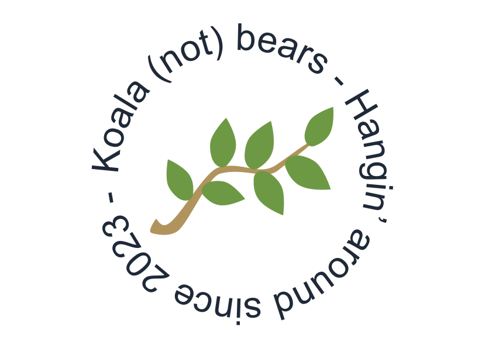
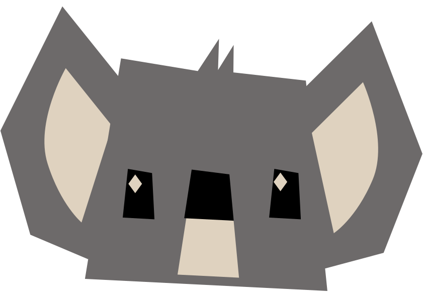
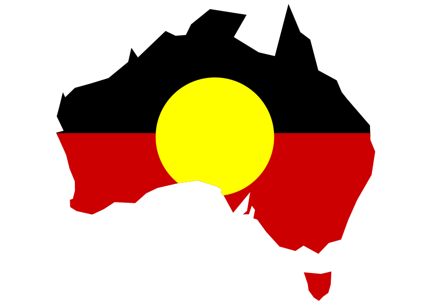
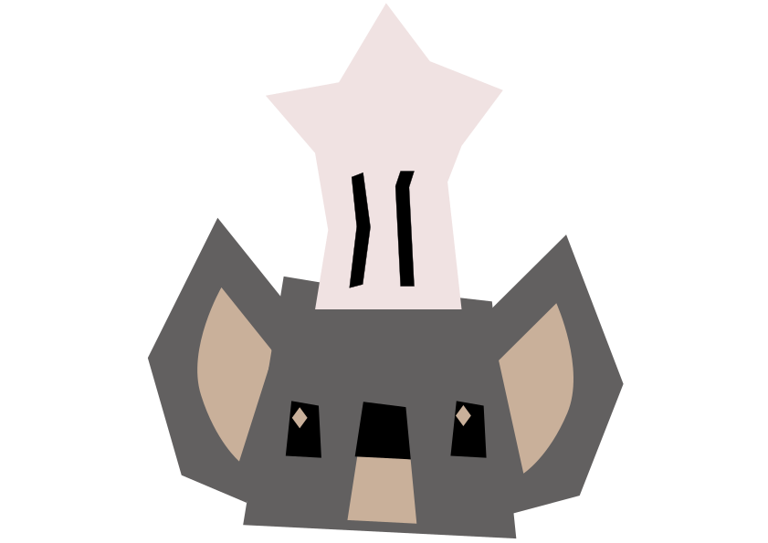
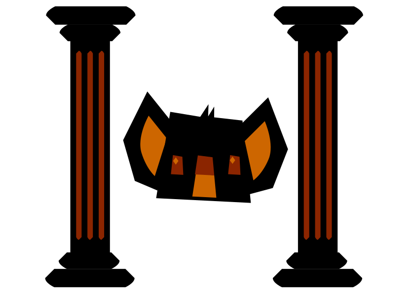
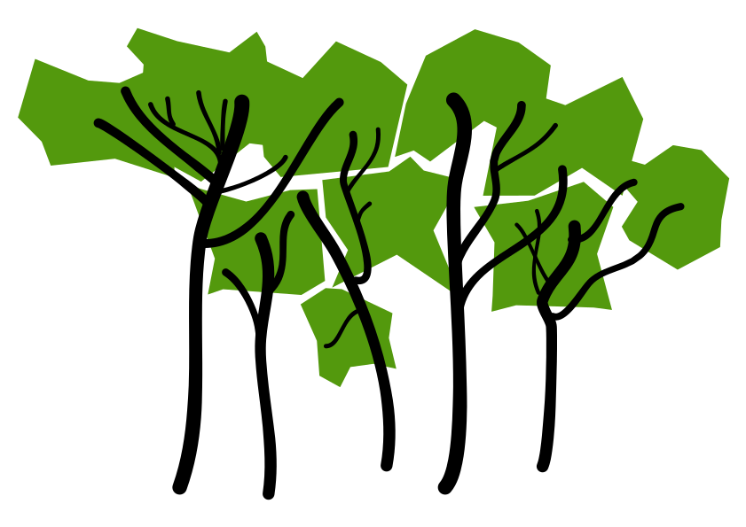

Ten facts about koalas!
Threats to koalas!
Cute koala pictures!
Koalas are awesome.
Sign up to the Australian Koala Foundation's newsletter to keep up to date on these super cute animals!
Sign up

Find out more about koalas!

Koalas and First Nations Peoples

What do koalas eat?

Some myths about koalas.

What's a koala's habitat?
“Even I realized that money was to politicians what the eucalyptus tree is to koala bears: food, water, shelter, and something to crap on.”
-P.J O'Rourke
Find out how you can help
The Australian Koala Foundation is a non-profit NGO dedicated to preserving the species and their habit.
Learn more